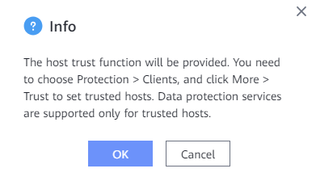

The host trust function is used to improve system security. After this function is enabled, you can set trusted hosts to prevent hosts beyond the whitelist (untrusted hosts) from attacking the system through forging the ProtectAgent certificate.
Procedure
- Choose System > Security > Trust.
- On the Trust Settings page, click Modify.
- Enable host trust and click Save.
- The following message is displayed. On the page, choose to set trusted hosts. Data protection services are supported only for trusted hosts.

- Confirm the information and click OK.

You can disable the host trust function. After it is disabled, the system no longer performs whitelist verification for hosts, which may pose security risks. You are advised to enable this function.